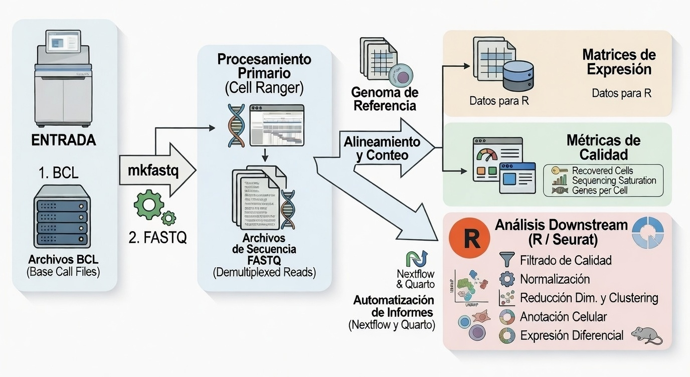

¡Hola! Soy Geni, el asistente inteligente de GenoScribe. Estoy aquí para ayudarte a explorar de forma interactiva el contenido de este informe bioinformático.
Cuando me haces una pregunta, primero intento reconocer si coincide con alguno de los patrones o expresiones que conozco. Si encuentro una coincidencia, te responderé directamente con una respuesta predefinida, diseñada para ser rápida, clara e incluso un poco ingeniosa. Si no reconozco el patrón, entonces activo mis herramientas de búsqueda: genero representaciones vectoriales (embeddings) y busco los fragmentos más relevantes entre varios documentos —incluyendo el propio informe, archivos PDF y HTML externos, y sesiones de preguntas y respuestas (QA). A partir de esa información, creo un resumen que intenta ofrecerte una respuesta coherente y útil basada en el contenido existente.
Se debe tener en cuenta que este entorno es experimental. No utilizo grandes modelos de lenguaje, por lo que algunas respuestas pueden ser aproximadas o incompletas. El objetivo principal es facilitar una visualización rápida, comprensible y reproducible de la información contenida en los documentos, permitiendo una exploración más dinámica del informe.
Actualmente, los resultados pueden variar en precisión, ya que empleo modelos ligeros y locales para asegurar que la aplicación funcione en cualquier entorno sin necesidad de servidores externos. Sin embargo, la estructura del sistema está preparada para mejorar notablemente su rendimiento en el futuro mediante la integración con modelos más avanzados o APIs externas. Para comenzar, simplemente escribe tu pregunta en el campo inferior y deja que yo me encargue del resto. ¡Prometo poner todo mi código en ello!
▼
Esta pestaña tiene un carácter eminentemente técnico y documenta cómo se ha generado el informe, qué datos se han utilizado, qué herramientas han intervenido y cómo se ha organizado el flujo de trabajo. Su finalidad es que cualquier persona que consulte este informe pueda comprender los procedimientos realizados, verificar los resultados y, si lo desea, reproducir el análisis completo con exactitud.
Durante la elaboración del informe, se proporcionan los siguientes parámetros de ejecución:
full o compact.
Los datos del informe provienen de un análisis integral que parte de los archivos crudos de secuenciación (BCL). En una primera fase, se emplea el pipeline Cell Ranger (10x Genomics) para la demultiplexación y conversión a formato FASTQ. A continuación, esta misma herramienta realiza el alineamiento contra el genoma de referencia y el control de calidad primario, generando informes automáticos (web summaries) y las matrices de conteo de expresión (archivos .h5). Posteriormente, estas matrices se importan al lenguaje de programación R, donde el análisis downstream se ejecuta utilizando principalmente el paquete Seurat. Este flujo abarca desde el riguroso filtrado de células únicas (QC), pasando por la reducción de dimensionalidad y clustering, hasta la anotación experta de poblaciones y el análisis de expresión diferencial entre condiciones, garantizando un flujo de trabajo exhaustivo y reproducible.
Una vez finalizado el análisis bioinformático, Nextflow organiza los resultados y prepara los archivos de configuración que sirven como interfaz con Quarto:
params.yml ⇒ contiene parámetros específicos de la ejecución, rutas de los resultados, versión del informe y opciones de visualización.
_quarto.yml ⇒ define la estructura del informe, incluyendo plantillas, pestañas, secciones y rutas internas, generado mediante yaml_generator.py.
Cuando todos los procesos previos han finalizado, Nextflow invoca quarto render, generando el informe HTML final en la carpeta report/. Este flujo asegura que el documento refleje de manera completa, consistente y reproducible todos los resultados transcriptómicos a nivel de célula única.
Gracias a esta arquitectura modular:
Además, esta pestaña incluye referencias a manuales, repositorios y documentación complementaria, accesibles mediante tarjetas de información. Para cualquier duda o soporte adicional, los datos de contacto se encuentran en la pestaña de inicio.
Tabla de contenidos de esta pestaña
1. Software y herramientas empleadas en el análisis
El proceso de análisis de Single-Cell RNA-Seq (scRNA-Seq) llevado a cabo en este estudio se sustenta en una arquitectura de dos fases computacionales diferenciadas. Esta separación permite manejar eficientemente la enorme carga computacional inicial y, posteriormente, aplicar algoritmos estadísticos interactivos de alta resolución.
En primer lugar, se utiliza el pipeline oficial Cell Ranger (desarrollado por 10x Genomics) para el procesamiento primario de las lecturas crudas, garantizando la correcta demultiplexación y alineamiento frente al genoma de referencia. En segundo lugar, el análisis downstream (secundario y terciario) se ejecuta íntegramente en el lenguaje de programación R, apoyado fuertemente en el paquete Seurat, el estándar actual de la industria para el análisis de célula única.
En los siguientes apartados se describen con detalle estas dos etapas metodológicas, los tipos de resultados que generan y, en el caso del análisis con R, se adjuntan los scripts utilizados para garantizar la trazabilidad y reproducibilidad total del experimento.
1.1. Procesamiento primario con Cell Ranger (10x Genomics)
Cell Ranger constituye el estándar computacional oficial diseñado por 10x Genomics para procesar los datos de su tecnología microfluídica Chromium. En este proyecto, el procesamiento inicial (upstream) se ejecutó de manera automatizada en infraestructuras de alto rendimiento (HPC), actuando como el puente directo entre la señal bruta del secuenciador y las matrices matemáticas de expresión celular.
Un prerrequisito crítico e ineludible para el éxito de esta fase es la disponibilidad de una arquitectura genómica de alta resolución. El proceso depende absolutamente de dos archivos estructurados aportados o consensuados con el investigador: la secuencia del genoma completo (en formato .fasta) y su anotación transcripcional (en formato .gtf o .gff). Esta anotación actúa como el “mapa de coordenadas” biológico; su calidad y grado de actualización dictan de forma directa qué porcentaje de lecturas genómicas se traducirán en genes detectables y cuánta información se perderá en regiones intergénicas no anotadas.
Las etapas algorítmicas clave que ejecuta esta herramienta se dividen en:
.fasta y .gtf proporcionados, creando un entorno de mapeo optimizado y filtrado (ej. restringiendo la cuantificación a genes codificantes o biotipos de interés).
BCL) emitidos por el secuenciador Illumina en secuencias de texto legibles (archivos FASTQ), separando matemáticamente las muestras del proyecto en base a sus índices moleculares.
FASTQ contra el genoma de referencia empleando el algoritmo STAR aligner. En este paso ultracomplejo se realiza la corrección de errores de los códigos de barras celulares (Cell Barcodes, que identifican a qué célula pertenece cada lectura) y el colapso de los identificadores moleculares únicos (UMIs, para eliminar duplicados exactos de la PCR).
.h5 (HDF5) como en formato abierto MEX (Market Exchange Format).
Dado que Cell Ranger es un pipeline secuencial cerrado y altamente calibrado por el fabricante, las matrices matemáticas purificadas en esta etapa constituyen el “bloque de arcilla” inamovible sobre el que se esculpirá todo el análisis biológico posterior en R/Seurat. A continuación, se muestra de forma esquemática este flujo de obtención de datos:

1.2. Análisis transcriptómico celular con R (Seurat)
Una vez obtenidas las matrices de conteo (.h5) desde Cell Ranger, el análisis downstream se trasladó al ecosistema de R. La herramienta principal utilizada para el procesado de célula única es Seurat, complementada con librerías accesorias para la visualización, anotación y cálculo estadístico.
El análisis mediante scripts personalizados en R abarca las siguientes fases críticas:
Para garantizar reproducibilidad y permitir la inspección técnica del código por parte de otros bioinformáticos, a continuación se proporciona acceso directo a los scripts analíticos principales desarrollados para este experimento, así como a las funciones auxiliares empleadas a lo largo del flujo.
1.2.1. Scripts principales de análisis
Los scripts ejecutables que contienen el flujo secuencial principal (procesamiento, clustering, anotación y DEGs) se ubican en el directorio:
/workspace/data/05-INT-24-scRNASeq_Timo_Mdelgado_organized/scripts/01_main
A continuación, se listan los archivos contenidos en dicho directorio:
Explorar los archivos de la carpeta “01_main” aquí
Una vez mostrados dichos archivos, se pasa a mostrar su código fuente uno por uno. Puede revisarlos cómodamente desde esta misma ventana o descargarlos para su ejecución.
Script auxiliar: analisys_edu.R
Script auxiliar: analisys_gon.R
1.2.2. Scripts de funciones auxiliares
Además de los flujos principales, el análisis se apoya en funciones complejas predefinidas y modulares (como la generación de gráficos o cálculos estadísticos repetitivos). Estos archivos se agrupan en el directorio en el siguiente directorio:
/workspace/data/05-INT-24-scRNASeq_Timo_Mdelgado_organized/scripts/02_functions
Explorar los archivos de la carpeta “02_functions” aquí
Una vez mostrados dichos archivos, se pasa a mostrar su código fuente uno por uno (en el caso de que hubiera varios). Puede revisarlos cómodamente desde esta misma ventana o descargarlos para su ejecución.
Script principal: scRNASeq.R
2. Estructura de los datos y resultados generados
Una vez completadas todas las etapas del flujo de análisis de Single-Cell RNA-Seq mediante con las herramientas anteriormente vistas, los resultados se organizan en una estructura de directorios que sirve como base para la generación de este informe automatizado. Esta organización incluye archivos intermedios, resultados finales y metadatos asociados a cada módulo del pipeline, garantizando la trazabilidad y la reproducibilidad del análisis completo.
Esta sección, al igual que el resto de la pestaña de metodología, tiene un propósito puramente técnico y está pensada como referencia interna para el usuario que generó el informe. Su objetivo es permitir comprender cómo se estructuran los datos de salida del proyecto, de modo que sea posible revisar rápidamente la organización de resultados sin necesidad de volver al entorno de análisis original.
A continuación se muestra la ruta del directorio principal donde se encuentran los datos y resultados generados para este proyecto:
/workspace/data/05-INT-24-scRNASeq_Timo_Mdelgado_organized
A continuación se muestra la estructura completa de dicho directorio. Esta representación permite visualizar los archivos y subcarpetas generados durante el análisis de Single-Cell RNA-Seq y que se emplearon como base para la construcción de este informe:
Explorar los archivos de la carpeta “05-INT-24-scRNASeq_Timo_Mdelgado_organized” aquí
Tras visualizar la estructura de forma interactiva, se presenta a continuación un desglose detallado de las carpetas generadas durante el análisis de Single-Cell RNA-Seq para el proyecto 05-INT-24-scRNASeq_Timo_Mdelgado_organized. Esta organización estandarizada está diseñada para mapear directamente el flujo biológico del análisis celular, facilitando la reproducibilidad y la trazabilidad de los resultados.
05-INT-24-scRNASeq_Timo_Mdelgado_organized/data/ ⇒ Directorio raíz que aloja todos los datos crudos, matrices de expresión, objetos matemáticos y recursos externos empleados en el proyecto.
01_raw_blc/ → Archivos binarios directos del secuenciador (Illumina).
02_fastq_cellranger/ → Resultados del procesamiento primario (10x Genomics), conteniendo los archivos FASTQ, las matrices de conteo (.h5) y los reportes HTML (web summaries) por muestra.
03_processed_objects/ → Archivos RDS (R Data Structure) con los objetos Seurat generados tras las etapas clave de filtrado, integración y anotación.
04_resources/ → Metadatos adicionales, bases de datos (HPCA, Tabula Muris) y archivos de curación manual (listas de marcadores) empleados para la anotación celular.
05-INT-24-scRNASeq_Timo_Mdelgado_organized/scripts/ ⇒ Repositorio del código fuente desarrollado para el análisis transcriptómico.
01_main/ → Scripts principales de ejecución que contienen el flujo de Seurat (procesamiento, clustering y DEGs).
02_functions/ → Archivos con funciones R auxiliares, personalizadas para cálculos estadísticos o visualizaciones específicas.
03_extra/ → Scripts complementarios o pruebas de concepto no incluidas en el pipeline final.
05-INT-24-scRNASeq_Timo_Mdelgado_organized/analysis/ ⇒ Carpeta principal de resultados. Contiene todos los gráficos, tablas y contrastes estadísticos generados de forma secuencial, desde el filtrado hasta la expresión diferencial.
01_qc/ → Control de calidad estructurado en dos niveles: 01_reads_qc/ (calidad de secuenciación con Fastp/FastQC y MultiQC) en el caso de que la hubiera y 02_cells_qc/ (gráficos de violín y filtrado celular en Seurat).
02_dim_reduction/ → Gráficos matemáticos de variabilidad (Elbow plots, PCA) utilizados para determinar las dimensiones óptimas del dataset.
03_clustering/ → Mapas no lineales (UMAP) y gráficos de proporciones celulares. Se divide sistemáticamente en aproximaciones merged (01_seurat_merged_clusters/) e integradas/balanceadas (02_seurat_integrated_clusters/).
04_markers/ → Tablas estadísticas con los genes constitutivos (Top Markers) calculados para cada cluster numérico ciego.
05_cell_annotation/ → Fase de identidad biológica. Contiene los resultados del contraste automatizado (01_automatic_dbs_annotation/) y la curación experta iterativa (02_manual_annotation/).
06_population_aggregation/ → Justificación visual y mapas definitivos tras la unificación de sub-estadios en macro-poblaciones anatómicas robustas para el contraste estadístico.
07_deg_conditions/ → Núcleo estadístico del proyecto. Contiene las tablas y visualizaciones (Volcanos, DotPlots) de expresión diferencial clínica (e.g., WT vs KO), estructuradas según el nivel de agrupación celular (clusters ciegos, bases de datos automáticas o anotación curada final).
08_enrichment/ → Análisis de enriquecimiento funcional de los genes diferencialmente expresados.
09_extra/ → Peticiones específicas, como la exploración detallada de la expresión de genes individuales de interés (01_specific_genes_of_interest/).
Esta estructura modular y coherente no solo permite automatizar los pasos clave del análisis bioinformático, sino que también garantiza trazabilidad, reproducibilidad y facilidad de interpretación. Además, contribuye a una mejor documentación del flujo de trabajo, lo cual es especialmente útil en entornos colaborativos o proyectos de largo recorrido.
3. Generación automatizada del informe
Una vez obtenidos los datos procesados mediante el análisis bioinformático y mostrada la estructura del directorio en el cuál se encuentran los resultados generados a partir de todo el proceso de análisis, el siguiente paso consiste en la generación automatizada del informe final. Esta sección tiene como objetivo documentar de manera clara y reproducible todo el proceso mediante el cual se construye el informe, detallando la organización de los archivos de ejecución, la integración de herramientas y la configuración utilizada.
En particular, se abordarán los siguientes aspectos:
Nextflow para automatizar la ejecución de Quarto y la generación del informe final, describiendo el rol de los scripts principales (main.nf) y cómo se coordinan las distintas etapas del pipeline.
_quarto.yml y params.yml ⇒ Se mostrarán los archivos de configuración que permiten reproducir el informe exacto, incluyendo rutas de entrada, parámetros de análisis y opciones de visualización. Esta documentación asegura que cualquier usuario técnico pueda regenerar el informe con los mismos resultados en el futuro, garantizando trazabilidad y reproducibilidad.
El propósito de esta sección es proporcionar un registro técnico completo del flujo de trabajo utilizado para generar el informe, de manera que cualquier persona que vuelva a consultar el proyecto pueda entender de forma clara cómo se ensamblaron los datos, qué herramientas se utilizaron y cómo se configuró todo el entorno de ejecución.
3.1. Estructura del directorio de ejecución
En esta subsección se describe la estructura de archivos y carpetas desde la cual se ejecuta el pipeline de metagenómica que genera el informe automatizado. Esta información es fundamental para entender cómo se organizan los datos de entrada, los resultados intermedios y los archivos de configuración de Quarto y Nextflow.
La ruta raíz desde la cual se ejecuta este pipeline es:
/workspace/GenoScribe/02-pipelines/01-transcriptomics/02-sc-rna-seq
A continuación se presenta la estructura completa del directorio correspondiente a este proyecto. Es importante destacar que los elementos listados (tanto archivos como subcarpetas) no representan enlaces interactivos, sino que se muestran únicamente para ilustrar la organización interna de los contenidos. Esta representación permite al lector comprender de manera clara y visual cómo se distribuyen los distintos componentes del proyecto, facilitando la navegación conceptual del directorio sin necesidad de acceder directamente a cada archivo.
Explorar los archivos de la carpeta “02-sc-rna-seq” aquí
A continuación se detalla la organización principal del directorio raíz del pipeline (01-bulk-rna-seq). Esta descripción está pensada como referencia técnica: indica qué hace cada archivo o carpeta, dónde se guardan los datos generados y cómo se conectan las piezas para producir el report final.
_quarto.yml, index.qmd ⇒ Archivos base de Quarto que definen la estructura del informe (toc, formatos, parámetros globales) y la página de índice. Cada pestaña del informe está representada por un .qmd.
main.nf, nextflow.config, params.yml ⇒ Ficheros de control del pipeline de Nextflow:
main.nf → script principal que orquesta las tareas (organización de los resultados, creación de scripts de configuración y renderizado del informe).
nextflow.config → configuración de ejecución (perfiles, recursos, módulos, rutas por defecto).
params.yml → parámetros concretos del proyecto (paths de entrada, opciones del pipeline) — generado o rellenado por el usuario/Nextflow para cada corrida.
report/ ⇒ Carpeta de salida donde Nextflow / Quarto depositan el informe final (HTML) y materiales derivados listos para compartir.
resources/ ⇒ Repositorio local de recursos y de los resultados consolidados. A alto nivel:
resources/01-essential/ → recursos usados por las plantillas y por los .qmd:
01-images/ → iconos y gráficas (portada, diagramas de workflow, favicon, etc.).
02-archives/ → copias de ficheros de interés (scripts, logs, ejemplos de .ini/.sh) usados como referencia o para descarga en la pestaña de metodología.
03-scripts/ → scripts auxiliares (R, Quarto templates, CSS, JS, Python y Bash) que apoyan la construcción del informe y la generación de artefactos (p. ej. yaml_generator.py).
resources/02-nextflow-results/ → ubicación donde Nextflow consolida los resultados del/los proyecto(s):
01-project-data/{nombre_del_proyecto}/ → copia local del proyecto procesado (entrada + resultados). Nextflow copia aquí los datos de trabajo para que Quarto los consuma de forma estable y reproducible.
02-analisis-estadistico/ → resultados exportados y productos intermedios listos para análisis estadísticos adicionales (por ejemplo exportes para R, tablas xlsx, gráficas volcán, etc.).
run_cleaning_dir.sh, run_pipeline_shell.sh, run_pipeline_shiny.sh ⇒ Scripts de utilidades en la raíz.
run_pipeline_shell.sh → wrapper para lanzar el pipeline desde la terminal (ejecuta Nextflow con el perfil/params adecuados).
run_pipeline_shiny.sh → invoca una interfaz gráfica (Shiny) que permite ejecutar el pipeline mediante un formulario para usuarios menos técnicos.
run_cleaning_dir.sh → script para limpiar caches y ficheros temporales (útil para liberar espacio, especialmente cuando los resultados y cachés de Nextflow crecen mucho).
Una vez comentada la estructura general del directorio de ejecución, se puede señalar que el pipeline está organizado de manera modular para asegurar la reproducibilidad, la trazabilidad de los resultados y la claridad en la generación del informe. Los archivos .qmd representan las pestañas y subsecciones del informe, mientras que Nextflow se encarga de consolidar los resultados previos, generar reportes adicionales cuando es necesario y coordinar la ejecución de Quarto para producir el documento final.
Dentro de resources/01-essential/03-scripts/02-quarto se mantienen dos versiones de las plantillas: 01-full-version, que incluye la pestaña de metodología y todas las secciones detalladas de análisis, y 02-compact-version, que omite la pestaña de metodología y ofrece una versión más compacta del informe. Cada archivo .qmd corresponde a una pestaña o subsección específica.
Nextflow utiliza los resultados existentes del análisis metagenómico (control de calidad, abundancias y predicciones funcionales) almacenados en resources/02-nextflow-results/01-project-data/{nombre_del_proyecto} y realiza operaciones adicionales como la preparación de datos estadísticos en 02-analisis-estadistico. Asimismo, genera los archivos de configuración que Quarto requiere, incluyendo params.yml y, mediante yaml_generator.py, _quarto.yml con los parámetros y rutas específicos del proyecto, para asegurar que la renderización del informe sea reproducible y consistente.
v Para generar el informe, Nextflow invoca quarto render sobre los .qmd y los archivos de parámetros correspondientes, produciendo el HTML final en report/. Los scripts auxiliares en la raíz del proyecto, como run_pipeline_shell.sh, run_pipeline_shiny.sh y run_cleaning_dir.sh, permiten ejecutar el pipeline desde la terminal, mediante interfaz gráfica o limpiar caches y directorios temporales respectivamente.
Para reproducir un informe exacto, se requiere disponer de la copia completa de los resultados en resources/02-nextflow-results/01-project-data/{nombre_del_proyecto}, así como de los archivos params.yml y _quarto.yml generados durante la ejecución. Esta estructura modular facilita la localización de los archivos necesarios y asegura que cualquier usuario pueda reconstruir el informe de manera consistente.
Para detalles adicionales y pasos exactos de ejecución, se recomienda consultar la guía oficial del proyecto en GitHub: GenoScribe: Guía completa para el pipeline Transcriptómico de Single-Cell RNA-Seq.
3.2. Integración de Nextflow y Quarto
La integración entre Nextflow y Quarto constituye la base técnica que permite generar de forma automatizada el informe final a partir de los resultados del análisis previo. Este enfoque busca asegurar reproducibilidad, modularidad y trazabilidad, evitando la dependencia de pasos manuales y reduciendo el riesgo de inconsistencias entre los resultados y la documentación generada. A diferencia de un pipeline clásico, en este caso Nextflow no ejecuta los procesos analíticos de pipelines precedentes como podría ser el de Cell Ranger o R, sino que consume sus resultados ya generados, realiza operaciones intermedias necesarias (copias estructuradas, generación de reportes auxiliares, preparación de parámetros) y finalmente invoca Quarto para la construcción del informe.
El esquema general es el siguiente:
nextflow.config.
params.yml y _quarto.yml).
quarto render para ensamblar el informe HTML final de manera completamente automatizada.
El archivo de configuración nextflow.config, ubicado en /workspace/GenoScribe/02-pipelines/01-transcriptomics/02-sc-rna-seq/nextflow.config, es el punto de partida de esta integración. Define las variables globales del pipeline, incluyendo:
outdir → Ruta de salida estándar donde se almacenarán los resultados y el informe final.
project_path → Ubicación del proyecto, que contiene la estructura de directorios generada previamente mediante el correspondiente análisis bioinformático.
report_version → Define la versión del informe a generar (full o compact), lo cual condiciona las pestañas y contenidos que Quarto renderizará.
Una vez comentado esto, podemos visualizar dicho archivo mediante el siguiente iframe, así como explorarlo de forma más detallada en una página completa o descargarlo (hay que abrir el informe mediante un servidor para que esta acción funcione, como ya se ha mencionado).
El archivo main.nf, ubicado en /workspace/GenoScribe/02-pipelines/01-transcriptomics/02-sc-rna-seq/main.nf, constituye el núcleo del pipeline y orquesta los diferentes procesos necesarios para la preparación del informe. Entre las etapas más relevantes que gestiona este script se incluyen:
resources/02-nextflow-results/01-project-data/. Esto garantiza que Quarto trabaje sobre una estructura consolidada y ligera.
nextflow.config, se generan los archivos params.yml y _quarto.yml (este último, mediante yaml_generator.py), los cuales actúan como interfaz entre el pipeline y Quarto.
quarto render para construir el informe HTML en la carpeta report/. Esto asegura que el informe se genere siempre con datos completos y parámetros consistentes.
De igual modo, podemos visualizar este archivo mediante el siguiente iframe, así como explorarlo de forma más detallada en una página completa o descargándolo.
Este diseño modular permite ampliar o modificar el pipeline fácilmente sin comprometer su reproducibilidad. Al separar claramente las etapas de preparación de datos y la generación del informe, se facilita la trazabilidad de cada componente y se asegura que cualquier informe pueda ser reconstruido en el futuro a partir de los mismos parámetros y estructura de resultados.
3.3. Configuración del archivo _quarto.yml y params.yml
Una vez ejecutado el pipeline de Nextflow, se generan los archivos de configuración _quarto.yml y params.yml. Estos archivos constituyen la interfaz entre el pipeline y Quarto, permitiendo que el último paso del flujo de trabajo ejecute quarto render y construya el informe HTML final a partir de los datos y parámetros proporcionados.
El archivo params.yml contiene todos los parámetros específicos de la ejecución, incluyendo rutas de archivos, opciones de visualización, marcador analizado, versión del informe y metadatos relevantes del proyecto. Por su parte, _quarto.yml establece la estructura del informe, definiendo las plantillas, pestañas, secciones a renderizar y rutas internas, mediante la ejecución del script yaml_generator.py. Juntos, estos archivos permiten que la generación del informe sea completamente automatizada, consistente y reproducible.
A continuación se puede visualizar params.yml mediante un iframe, explorar su contenido de manera interactiva, o abrirlo en una página completa y descargarlo si se desea:
Una vez comprendido el contenido de params.yml, se puede observar _quarto.yml, que actúa como guía estructural para Quarto, indicando qué plantillas y secciones deben incluirse y cómo deben organizarse dentro del informe. Este archivo es esencial para que quarto render genere un documento final coherente con los datos del proyecto.
Esta arquitectura garantiza que cualquier informe pueda ser reproducido en el futuro de manera exacta, siempre que se disponga de los mismos resultados consolidados en resources/02-nextflow-results/01-project-data/nombre_del_proyecto y de los archivos params.yml y _quarto.yml generados por el pipeline. La separación clara entre la preparación de datos y la generación del informe asegura trazabilidad, modularidad y consistencia en los reportes finales.
4. Manuales, repositorios y documentación complementaria
Esta sección final cierra la pestaña de metodología, dirigida principalmente a usuarios interesados en comprender en detalle cómo se ha generado el informe, qué datos se han utilizado y cómo se ha estructurado la integración entre Nextflow y Quarto. La información aquí proporcionada permite acceder a recursos adicionales, consultar la documentación técnica y localizar los repositorios de código para revisar o reutilizar los scripts empleados.
De manera similar a las tarjetas de inicio, se presentan a continuación algunas tarjetas informativas que facilitan el acceso rápido a los recursos clave relacionados con este proyecto:
Repositorio de código
Documentación
Fecha de creación del informe
2026-03-13
Para cualquier duda adicional o consultas de soporte, se puede recurrir a los datos de contacto que se muestran en la pestaña de inicio del informe, donde se incluyen enlaces a la Unidad de Bioinformática del CSIC y al correo de soporte.
{kind=link}